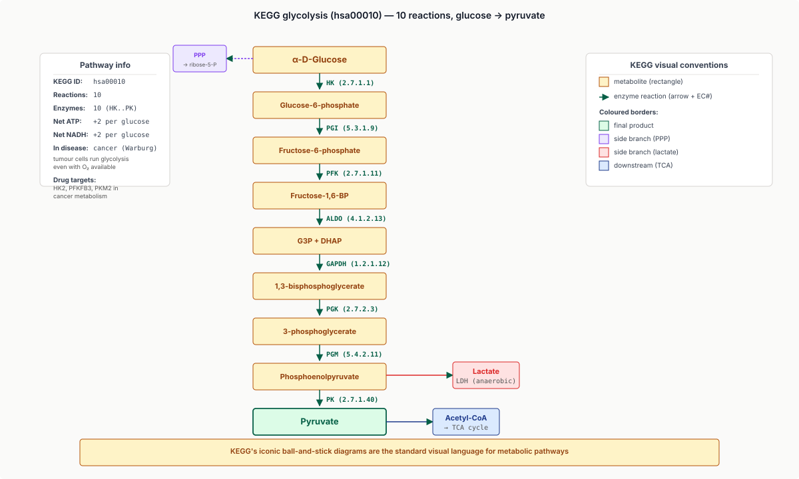
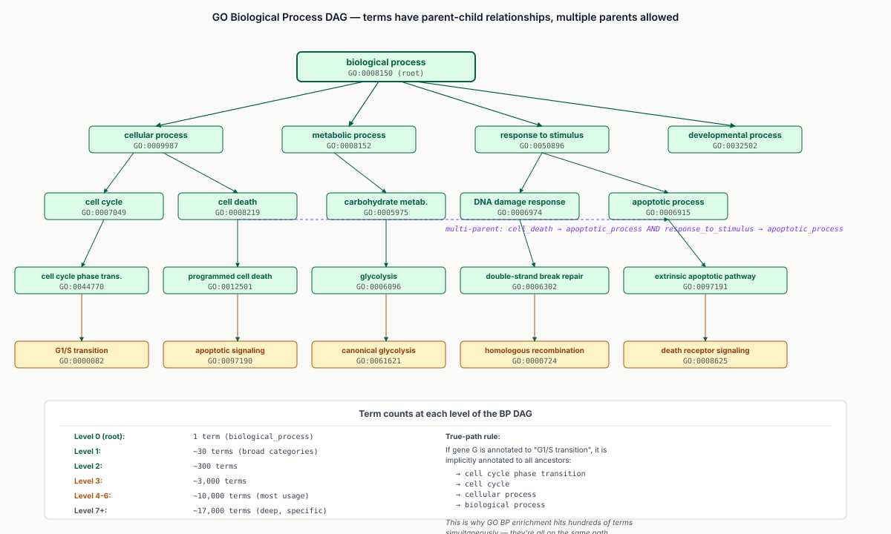
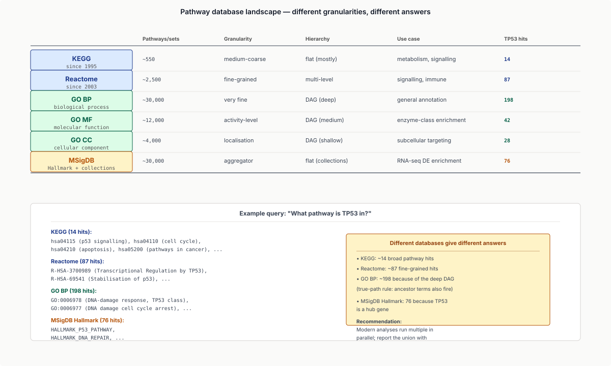
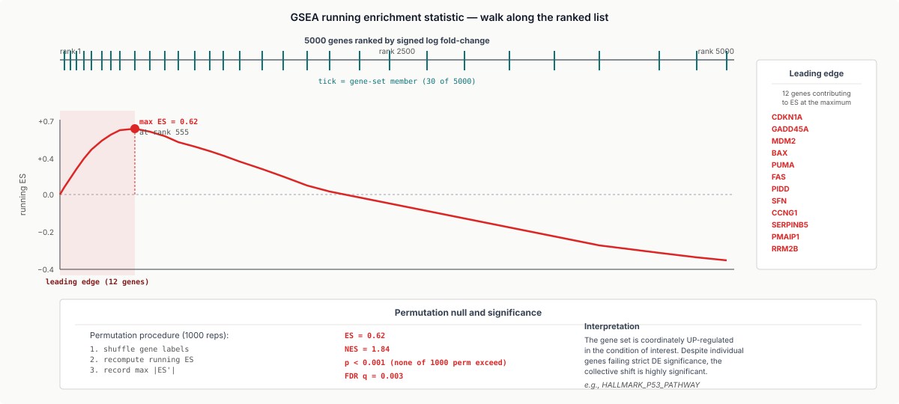
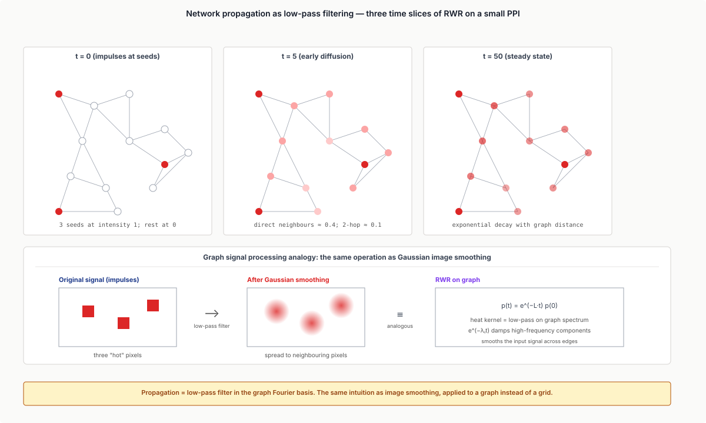
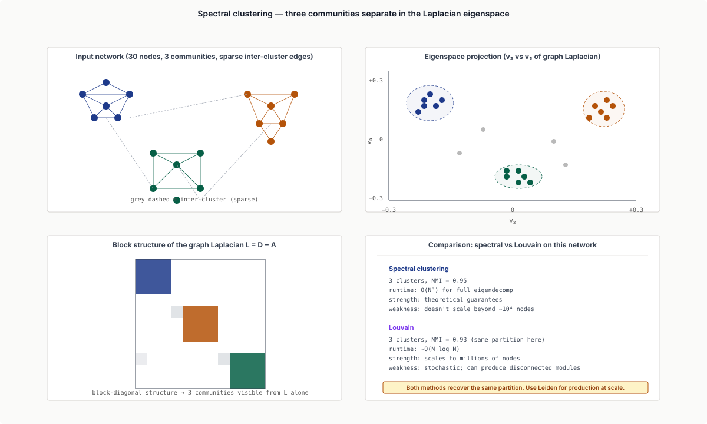
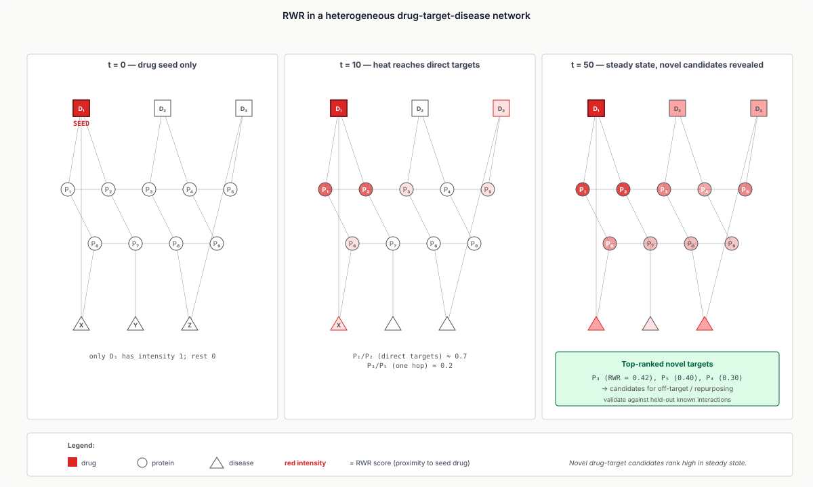
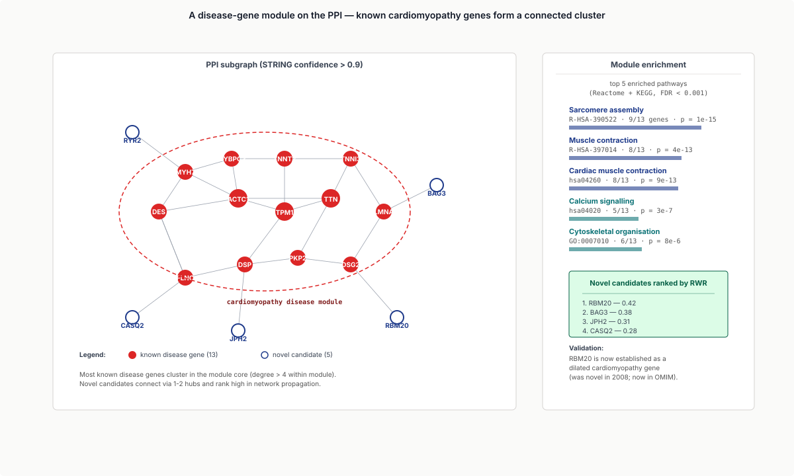
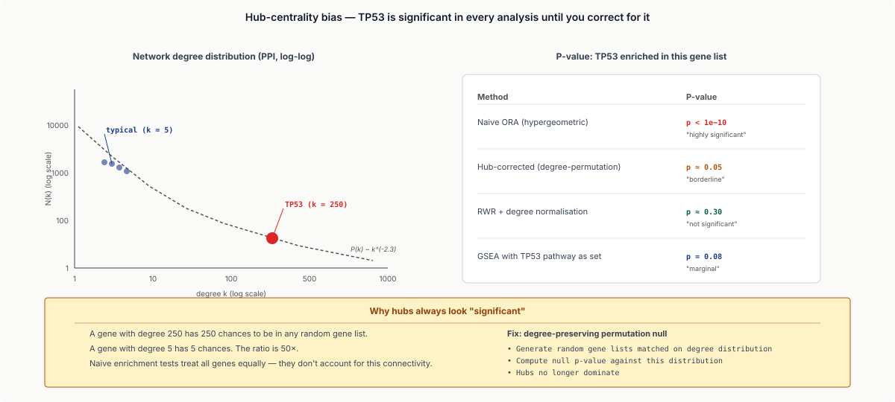
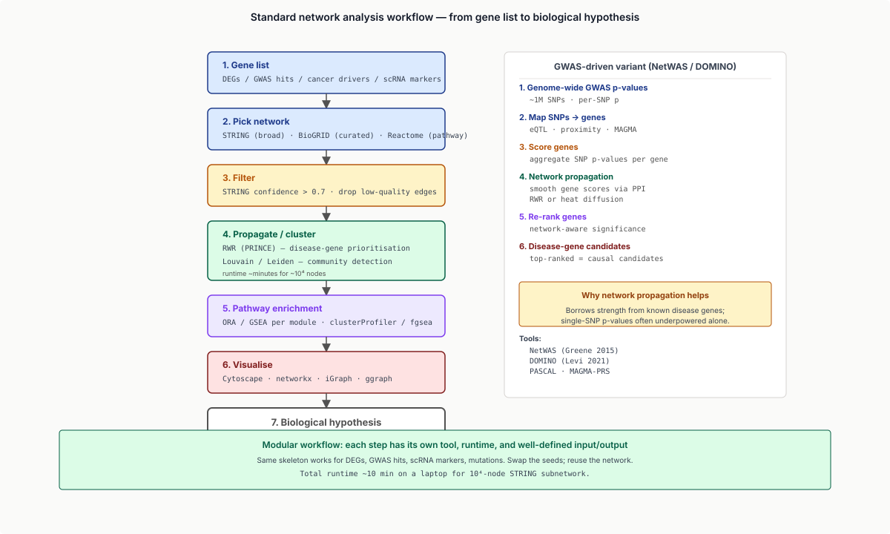

Five moves: turn the gene list into a graph, enrich pathways with ORA / GSEA, propagate signal as low-pass filter, cut into modules by graph spectrum, read off the biology.
Learning objectives
- Distinguish the major biological-network types: protein-protein interaction (PPI), gene regulatory (GRN), metabolic, signalling, and disease networks; recognise the data sources behind each.
- Apply pathway enrichment via over-representation analysis (ORA, hypergeometric / Fisher's exact test) and gene-set enrichment analysis (GSEA, signed Mann-Whitney / Kolmogorov-Smirnov on a ranked list).
- Compute network propagation (random-walk-with-restart, heat diffusion) and explain it as a Laplacian smoother on the network.
- Detect modules / communities via spectral clustering and modularity maximisation (Louvain, Leiden).
- Interpret pathway databases (KEGG, Reactome, MSigDB, GO) and their hierarchical / DAG structure.
- Apply network-based methods to drug-target prediction, disease-gene prioritisation, and pathway-context interpretation of DEGs.
- Frame network biology as graph signal processing: the network Laplacian is a spectral operator; propagation = low-pass filter; module detection = clustering on graph spectrum.
Part 1 · 25 min Why Networks
1.1 The gene-list problem
By the time you reach this lecture, you've generated several gene lists in this course:
- DEGs from RNA-seq differential expression.
- TF-bound regions from ChIP-seq.
- Cell-state-marker genes from scRNA-seq clustering.
- GWAS-significant SNPs and their nearest genes.
- Tumour-driver mutations.
In every case, the question "what does this gene list mean?" is the next step. Networks and pathways are the framework for answering it.
1.2 Network types in biology
Several distinct types, each with different data sources and uses.
Protein-protein interaction (PPI): nodes are proteins; edges are physical interactions detected by affinity-purification mass spec (AP-MS), yeast two-hybrid (Y2H), proximity labelling (BioID, APEX), or structural prediction (AlphaFold-multimer). Major databases: STRING (broadest, includes predicted interactions), BioGRID (curated experimental), IntAct, HuRI (human reference interactome). Use: identify protein complexes; infer function by guilt-by-association.
Gene regulatory networks (GRNs): nodes are genes (or TFs and their targets); edges are TF-target regulation. Sources: ChIP-seq motif enrichment, perturbation experiments (CRISPRi screens), ATAC-seq + chromatin annotation. Use: predict expression cascades; identify master regulators.
Metabolic networks: nodes are metabolites; edges are enzymes (or vice versa). Sources: KEGG, MetaCyc, Recon3D. Use: pathway analysis, flux balance analysis, drug-side-effect prediction.
Signalling networks: nodes are signalling proteins (kinases, GPCRs, etc.); edges are phosphorylation, allosteric activation, complex formation. Sources: PhosphoSitePlus, OmniPath, Reactome. Use: drug-mechanism inference, pathway perturbation modelling.
Disease networks: nodes are diseases; edges are shared genes, comorbidity, drug-target overlap. Sources: DisGeNET, OpenTargets, OMIM. Use: drug repurposing, comorbidity prediction.
![Five panels showing the major biological network types side by side. Panel 1 PPI: dense graph of proteins with cobalt edges; STRING, BioGRID listed; ~20,000 nodes / 1M edges in human. Panel 2 GRN: TFs and target genes with red regulatory edges; ENCODE-derived. Panel 3 metabolic: metabolite nodes connected by green enzyme edges; KEGG-style. Panel 4 signalling: phosphorylation cascade in violet. Panel 5 disease: triangular disease nodes connected by shared-gene teal edges. Cross-network workflow panel below.](../diagrams/lecture-22/01-network-types.svg)
1.3 Network properties at a glance
Real biological networks share common topology features:
- Scale-free degree distribution: a few hub nodes (high degree) and many low-degree nodes. Power law $P(k) \sim k^{-\gamma}$, typically $\gamma \in [2, 3]$.
- Small-world: average path length grows logarithmically with network size — any two proteins are typically 4-6 hops apart.
- Modular: dense functional clusters connected sparsely.
None of these are unique to biology — social networks, the Internet, citation networks all show similar patterns. The toolkit of network science transfers directly.
1.4 Why graphs are the natural representation
Genes and proteins don't function in isolation. Their behaviour depends on:
- Which other proteins they interact with.
- Which pathways they're embedded in.
- How perturbations propagate through their neighbourhood.
A list misses all of this; a graph captures it. Once you have the graph, the toolkit of graph algorithms — shortest paths, centrality, community detection, propagation — applies directly.
1.5 The deep dive
Part 2 · 25 min Pathway Databases and the Gene-Set Universe
2.1 What's a pathway
A pathway is a curated list of genes / proteins / metabolites that work together to accomplish a biological function:
- Glycolysis — ~20 enzymes converting glucose to pyruvate.
- p53 signalling — TP53 + ATM + MDM2 + CDKN1A + ~50 downstream targets.
- Wnt-β-catenin — ligands, receptors, intracellular cascade, transcriptional output.
Pathways are the unit of human-readable biological interpretation.
2.2 KEGG
KEGG (Kyoto Encyclopedia of Genes and Genomes), established 1995. ~550 manually-curated pathways: metabolic pathway maps (the iconic "ball-and-stick" diagrams), signalling, regulatory, disease pathways. Pathways are abstract; genes mapped per species. KEGG pathway IDs (e.g., hsa04110 = "Cell cycle - human") are the de facto standard for pathway-level annotation.

2.3 Reactome
Reactome, established 2003, ~2,500 pathways (more granular than KEGG). Hierarchical — pathways nest into super-pathways and sub-pathways. Reaction-level detail — each pathway is a sequence of biochemical reactions. Strong coverage of human signalling and immune pathways.
Reactome's hierarchy means you can run analysis at the granularity that fits your question — "DNA repair" (broad) or "Translesion synthesis" (specific).
2.4 Gene Ontology (GO)
GO, established 1998, ~50,000 terms organised as three DAGs:
- Biological Process (BP): e.g., "cell cycle progression", "immune response".
- Molecular Function (MF): e.g., "kinase activity", "DNA binding".
- Cellular Component (CC): e.g., "nucleus", "plasma membrane".
GO is the most widely-used annotation system in the world. Each gene is annotated with multiple GO terms — often dozens. The DAG structure means terms have parent-child hierarchy: "cell cycle phase transition" ⊂ "cell cycle" ⊂ "cellular process" ⊂ "biological process".

2.5 MSigDB and other compendia
MSigDB (Molecular Signatures Database, Broad Institute) aggregates many pathway / gene-set sources. ~30,000 gene sets across:
- Hallmark gene sets (50 well-curated functional collections).
- KEGG, Reactome, BioCarta translations.
- Curated signatures from literature.
- Cancer-specific signatures.
- Cell-type marker genes.
For typical RNA-seq DE analysis, MSigDB is the first place to test enrichment.

2.6 The deep dive
The gene-set universe has rich structure: genes belong to many overlapping sets; sets have hierarchical relationships; some are well-curated, others are statistical aggregates. Modern analyses must account for this overlap — similar terms often produce correlated p-values, and a "significant" result on a parent term plus a child term may be one finding double-counted.
Part 3 · 45 min Pathway Enrichment Analysis
3.1 The over-representation problem
Setup:
- $L$ = your gene list (e.g., DEGs at FDR < 0.05).
- $G$ = a gene set (e.g., a KEGG pathway).
- $U$ = the universe (typically all genes tested in the experiment).
Question: are genes from $G$ over-represented in $L$ relative to expectation under the null "$L$ is a random subset of $U$"?
3.2 Hypergeometric / Fisher's exact test
The natural null: $L$ is sampled uniformly without replacement from $U$. Under this null, the count of $L \cap G$ follows a hypergeometric distribution.
Fisher's exact test is mathematically equivalent in this setting:
| In $G$ | Not in $G$ | Total | |
|---|---|---|---|
| In $L$ | $a$ | $b$ | $a + b$ |
| Not in $L$ | $c$ | $d$ | $c + d$ |
| Total | $a + c$ | $b + d$ | $N$ |
P-value = probability of observing $\geq a$ overlap by chance, computed exactly via the hypergeometric CDF. This is ORA (Over-Representation Analysis) — the simplest pathway-enrichment method.
3.3 The multiple-testing problem
If you test 1000 pathways, you'll get many "significant" by chance. Apply Benjamini-Hochberg FDR (from the differential-expression lecture) to the per-pathway p-values. Cap reported pathways at FDR < 0.05.
For overlapping gene sets (e.g., parent and child GO terms), the p-values are correlated, so BH is conservative but valid.
3.4 GSEA
Gene Set Enrichment Analysis (Subramanian et al. 2005) addresses ORA's biggest weakness: ORA throws away the rank information. ORA only counts genes above the significance threshold; GSEA uses the full ranked list of all tested genes.
Algorithm:
- Rank all $N$ genes by some statistic (e.g., signed log fold change).
- For each gene set $G$:
- Walk down the ranked list.
- At each gene in $G$, increment a running enrichment score (ES).
- At each gene not in $G$, decrement.
- Track the maximum $|ES|$ reached — this is the enrichment score for $G$.
- Compute statistical significance via permutation: shuffle gene labels and re-compute ES; the p-value is the fraction of permutations with $|ES'| \geq |ES|$.
GSEA detects coherent shifts in pathway expression even when individual genes don't pass the strict significance threshold. Far more sensitive than ORA on real data.


3.5 Modern variants
- fgsea (Sergushichev 2016) — fast preranked GSEA.
- camera (Wu & Smyth 2012) — variance-inflation correction for inter-gene correlation.
- roast / mroast (Wu et al. 2010) — rotation-based gene-set tests.
- SAFE / SCREENER / CERNO — alternative running-statistic methods.
For typical RNA-seq workflows: run fgsea with MSigDB Hallmark + KEGG + Reactome, FDR < 0.05.
3.6 The signed vs unsigned distinction
If the ranked statistic is signed (e.g., log fold change), GSEA detects directional enrichment (pathway up vs down). If unsigned (absolute value), GSEA detects deregulation (pathway perturbed in either direction).
Choice depends on the question:
- "Is glycolysis up in tumour vs normal?" → signed.
- "Is glycolysis perturbed (up or down) by drug X?" → unsigned.
3.7 The deep dive
Part 4 · 30 min Network Propagation
4.1 The smoothing intuition
If gene $g$ is connected to many DEGs in the PPI network, $g$ is likely involved even if its own expression didn't change. Network propagation formalises this: spread the DEG signal across the network so neighbours of DEGs accumulate score.
Used in:
- Disease-gene prioritisation: spread known-disease genes; rank novel candidates.
- Drug-target prediction: spread known drug targets; rank candidates.
- GWAS interpretation: spread GWAS hits to identify implicated pathways.
- Cancer driver discovery: spread mutations across the PPI to find driving modules.
4.2 Random walk with restart (RWR)
The most common propagation algorithm:
$$\mathbf{p}^{(t+1)} = (1 - r)\, W\, \mathbf{p}^{(t)} + r\, \mathbf{p}^{(0)}$$
where $W$ is a normalised adjacency matrix (typically column-normalised to be a transition matrix), $r$ is the restart probability (typical 0.5), and $\mathbf{p}^{(0)}$ is the initial signal — 1 for known-disease genes / known drug targets / DEGs, 0 elsewhere.
At each step:
- With probability $1 - r$, walk to a neighbour.
- With probability $r$, restart at $\mathbf{p}^{(0)}$.
Iterate to convergence (~50 iterations). The stationary distribution $\mathbf{p}^{(\infty)}$ scores each node by its proximity to the seeds. Closed form: $\mathbf{p}^{(\infty)} = r (I - (1-r) W)^{-1} \mathbf{p}^{(0)}$.
4.3 Heat diffusion
An alternative formulation: model the signal as a heat distribution that diffuses according to the graph Laplacian:
$$\frac{d\mathbf{p}}{dt} = -L\, \mathbf{p}$$
with $L$ the normalised Laplacian. Solution: $\mathbf{p}(t) = e^{-Lt} \mathbf{p}(0)$. The continuous heat kernel $e^{-Lt}$ is the analog of RWR. Both are low-pass filters in the graph Fourier basis.
4.4 What propagation does, formally
In the eigenbasis of $L$ (with eigenvalues $\lambda_i$ and eigenvectors $\mathbf{v}_i$):
$$\mathbf{p}(t) = \sum_i e^{-\lambda_i t} \langle \mathbf{p}(0), \mathbf{v}_i \rangle \mathbf{v}_i$$
High-eigenvalue components decay fast; low-eigenvalue components persist. The result: the propagated signal is smooth across the graph (low-frequency in the graph spectrum).
This is the same low-pass-filter logic as Gaussian smoothing in image processing, applied to a graph instead of a grid.

4.5 PRINCE, HotNet, and the workflow
- PRINCE (Vanunu et al. 2010) — RWR for disease-gene prioritisation; the canonical implementation.
- HotNet2 (Leiserson et al. 2015) — heat-diffusion-based discovery of "hot subnetworks" enriched in cancer mutations.
- NetWAS — GWAS hit prioritisation via network propagation.
Practical workflow: load network → set seeds → run propagation (50 iterations or matrix inversion) → rank nodes by score → interpret top hits.
4.6 The deep dive
Part 5 · 25 min Module Detection and Communities
5.1 The module hypothesis
A module is a tightly-connected subgraph corresponding to a functional unit (a protein complex, a pathway, a cell-type-specific regulatory module). Detecting modules from a network is community detection.
Biological assumption: genes in the same module have related functions and are more likely to be co-regulated, co-expressed, and disease-associated.
5.2 Modularity
The Newman modularity score (Newman 2004) quantifies how strongly a partition $\{C_1, ..., C_k\}$ corresponds to communities:
$$Q = \frac{1}{2m} \sum_{i,j} \left[ A_{ij} - \frac{k_i k_j}{2m} \right] \delta(c_i, c_j)$$
where $m$ = total edges, $k_i$ = degree of node $i$, $\delta(c_i, c_j) = 1$ if $i$ and $j$ are in the same community, 0 otherwise. Maximising $Q$ produces the optimal community partition. The Louvain and Leiden algorithms (Traag et al. 2019) are the standard fast heuristics.
5.3 Spectral clustering
An alternative: eigendecompose the graph Laplacian $L$, then cluster on the smallest non-zero eigenvectors.
- Compute $L = D - A$.
- Find the $k$ smallest non-zero eigenvalues with eigenvectors $\mathbf{v}_1, ..., \mathbf{v}_k$.
- Form an $n \times k$ matrix $V$.
- Cluster rows of $V$ with k-means.
The eigenvectors at low frequencies highlight cuts of the graph that separate dense communities. Spectral clustering is mathematically equivalent to graph-cut optimisation and produces similar results to modularity maximisation.

5.4 Louvain and Leiden
Louvain (Blondel et al. 2008) iterates modularity maximisation:
- Initialise each node as its own community.
- For each node, move to the neighbouring community that increases $Q$ most.
- Aggregate communities; repeat at the meta-level.
Leiden (Traag et al. 2019) improves Louvain by guaranteeing connectivity within communities (Louvain occasionally produces disconnected modules). Used in scanpy / Seurat for single-cell clustering — the same Leiden you'll see again in scRNA-seq lectures.
5.5 The deep dive
Part 6 · 20 min Applications: Drugs, Disease, and Beyond
6.1 Drug-target prediction
Build a heterogeneous network: drugs, targets, diseases, side effects. Run RWR from drugs of known efficacy or known disease genes. Predict new drug-target relationships from high RWR scores between drug nodes and protein nodes.
Methods: GBA (Guilt By Association), NeoDTI (deep-learning extension), DrugBank-based RWR. In practice, network methods are useful for drug repurposing (finding new uses for existing drugs) and off-target prediction (anticipating safety issues before clinical trials).

6.2 Disease-gene prioritisation
Given a chromosomal region (e.g., from GWAS or clinical exome), several genes lie in the candidate region. Which is most likely the disease gene?
Network-based approach:
- Take a known set of seed disease genes for the same disease.
- Run RWR from the seeds.
- Among candidate genes in the region, the one with the highest RWR score is the most likely culprit.
Tools: PRINCE (Vanunu 2010), DOMINO (Levi 2021), GeneMania (Warde-Farley 2010). Routine in clinical genomics for novel disease-gene discovery.

0.9) neighbours. Module structure visible: most known disease genes cluster together with strong PPI density; a few outlier genes connect via hub nodes. Side panel showing pathway enrichment of the module — top 5 pathways: sarcomere assembly, muscle contraction, cardiac muscle contraction, calcium signalling, cytoskeletal organisation.">6.3 Pathway-context interpretation of DEGs
When you have 200 DEGs from an RNA-seq experiment, ORA and GSEA tell you which pathways are enriched. Network methods take this further:
- Project DEGs onto the PPI network.
- Run propagation to find connected modules among DEGs.
- Identify "core" hubs that connect multiple DEGs.
- Hypothesise causal mechanism: hub gene's perturbation explains the cascade.
This is the workflow behind tools like OmicsNet, NetworkAnalyst, and STRING-driven analysis.
6.4 Cell-cell communication
From single-cell data, infer cell-cell signalling networks based on ligand-receptor expression patterns and downstream effector activation.
Tools: CellChat (Jin 2021), CellPhoneDB. The signalling network is inferred per cell-type pair; integrative analysis identifies dominant communication pathways in tissue.
6.5 The 2024 frontier
- Graph neural networks (GNNs) are starting to replace classical RWR for some tasks. They learn task-specific node embeddings instead of using fixed propagation.
- Multi-modal networks integrate PPI + GRN + drug-target + GWAS into one heterogeneous graph; GNNs learn unified embeddings.
- Network medicine applies network biology to clinical decision support; still mostly research, slowly entering clinical practice.

Part 7 · 15 min Tools, Visualisation, and Workflows
7.1 Visualisation tools
- Cytoscape — desktop standard for network visualisation; many plugins for layout, statistics, integration.
- Gephi — another popular desktop tool.
- igraph (R / Python) — scriptable analysis.
- networkx (Python) — the de facto standard for programmatic network analysis.
For a typical RNA-seq paper: igraph / networkx for analysis; Cytoscape for figure generation.
7.2 The standard workflow
- Define seeds: DEGs / GWAS hits / cancer drivers.
- Pick network: STRING (broad), BioGRID (curated), Reactome (pathway-based).
- Filter network: keep highest-confidence interactions (STRING confidence > 0.7).
- Run propagation / community detection.
- Visualise: subgraph induced by seeds + their high-score neighbours.
- Annotate: pathway enrichment on each module.

0.7. 4. Run propagation or community detection. 5. Pathway enrichment on modules. 6. Visualise (Cytoscape). 7. Biological hypothesis. Each step labelled with tool choice and runtime estimate. Side panel: variant for GWAS-driven workflow using NetWAS / DOMINO.">7.3 Common pitfalls
- Network bias: the network has more edges among well-studied proteins; rankings reflect study-bias rather than biology.
- False edges: high-throughput interaction screens have false-positive rates 30-50%. STRING's score thresholds matter.
- Tissue specificity: PPI networks are species-aggregate, not tissue-specific. Tissue-specific filtering improves relevance.
- Hub bias: hubs (e.g., TP53) appear in every analysis as significant; correct for hub centrality before interpreting.
Wrap-up
What you should take away
- Networks are the natural representation for biology beyond gene lists. Five major types: PPI, GRN, metabolic, signalling, disease.
- Pathway enrichment comes in two flavours: ORA (hypergeometric on a thresholded gene list) and GSEA (Mann-Whitney / KS on a ranked list). GSEA is more sensitive for coherent shifts.
- Network propagation = RWR or heat diffusion. Mathematically a low-pass filter in the graph spectrum. Used for disease-gene prioritisation, drug-target prediction, GWAS interpretation.
- Module detection = modularity maximisation (Louvain / Leiden) or spectral clustering. Both operate on the graph spectrum.
- Pathway databases (KEGG, Reactome, GO, MSigDB) differ in granularity and coverage; modern analyses run multiple in parallel.
- EE framings: networks as graphs with Laplacian; propagation as low-pass filter; module detection as spectral clustering; GSEA as KS test on ranked statistic.
Next lecture
Single-cell RNA-seq fundamentals. The Leiden clustering used in scanpy / Seurat is the same Leiden algorithm you saw here.
Homework
- Take a list of 200 DEGs (use any public RNA-seq DE result). Run ORA against MSigDB Hallmark, KEGG, Reactome via clusterProfiler or g:Profiler. Report the top 5 enriched pathways at FDR < 0.05.
- Run GSEA on the same data using the full ranked list. Compare to ORA: how many pathways agree? Where does GSEA find pathways ORA misses?
- Build a small (~50-node) PPI subgraph from STRING for a gene family of your choice. Run RWR from one seed gene; rank all nodes by RWR score. Compare top 10 to direct neighbours of the seed.
- Implement Louvain community detection in Python on a synthetic network with known communities. Compare to ground truth using normalised mutual information.
- For one disease of interest, get the DisGeNET disease genes. Run propagation in the STRING network. Identify novel candidates (high RWR score, not yet associated with the disease).
Recommended reading
- Subramanian, A., Tamayo, P., Mootha, V. K., et al. (2005). Gene set enrichment analysis: a knowledge-based approach for interpreting genome-wide expression profiles. PNAS 102, 15545–15550.
- Khatri, P., Sirota, M., & Butte, A. J. (2012). Ten years of pathway analysis: current approaches and outstanding challenges. PLoS Computational Biology 8, e1002375.
- Vanunu, O., Magger, O., Ruppin, E., et al. (2010). Associating genes and protein complexes with disease via network propagation. PLoS Computational Biology 6, e1000641.
- Leiserson, M. D., Vandin, F., Wu, H. T., et al. (2015). Pan-cancer network analysis identifies combinations of rare somatic mutations across pathways and protein complexes. Nature Genetics 47, 106–114.
- Newman, M. E. (2006). Modularity and community structure in networks. PNAS 103, 8577–8582.
- Traag, V. A., Waltman, L., & van Eck, N. J. (2019). From Louvain to Leiden: guaranteeing well-connected communities. Scientific Reports 9, 5233.
- Cowen, L., Ideker, T., Raphael, B. J., & Sharan, R. (2017). Network propagation: a universal amplifier of genetic associations. Nature Reviews Genetics 18, 551–562.
- Barabási, A. L., Gulbahce, N., & Loscalzo, J. (2011). Network medicine: a network-based approach to human disease. Nature Reviews Genetics 12, 56–68.
- STRING: string-db.org
- KEGG: kegg.jp
- Reactome: reactome.org
- MSigDB: gsea-msigdb.org/gsea/msigdb
- Gene Ontology: geneontology.org
- Cytoscape: cytoscape.org
- networkx: networkx.org
Appendix — timing summary
| Block | Time | Cumulative |
|---|---|---|
| Part 1 — Why Networks | 25 min | 0:25 |
| Part 2 — Pathway Databases and the Gene-Set Universe | 25 min | 0:50 |
| Part 3 — Pathway Enrichment Analysis | 45 min | 1:35 |
| Part 4 — Network Propagation | 30 min | 2:05 |
| Part 5 — Module Detection and Communities | 25 min | 2:30 |
| Part 6 — Applications: Drugs, Disease, and Beyond | 20 min | 2:50 |
| Part 7 — Tools, Visualisation, and Workflows | 15 min | 3:05 |
| Wrap-up | 10 min | 3:15 |
Total: ~3h 15min of content.